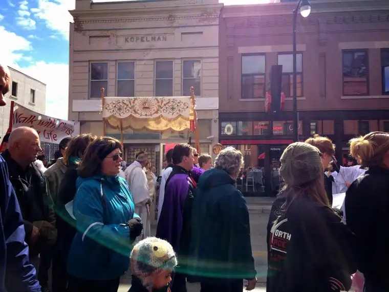
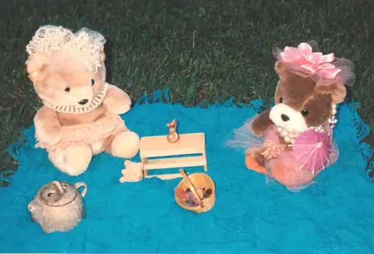

My sidewalk prayer ministry has taken a backseat of late to the many May activities that have kept this mama family-bound. Since family is my first vocation, this is not a sacrifice, but I have missed a little of the sidewalk activity in front of our state’s only abortion facility. Thankfully, with or without me, the prayer continues each week.

Last Wednesday, I was at a baccalaureate luncheon with my family when a text came through from one of the mothers who prays with us. Often, she brings her young daughter. What she reported brought joy to my heart.
Apparently, that week one of the escorts of the facility also brought her child of a similar age. Within seconds of their arrival, the mother reported, the two children were “playing tea party” on the blanket she sets out for her child.

“Two innocent children laughing, sharing snacks, and splashing in puddles, blissfully unaware that their parents are on opposite sides in a battle for life.”
Sitting at a banquet table, waiting for our almost-graduates to be named and honored, I quietly thanked God for this moment that I was not able to witness myself, but received nevertheless as a gift of hope.
It seems in some way that scene was a prelude to this week. During my watch, I was able to talk to a woman who gave me her name. While she took a drag from her cigarette during a pause there on the sidewalk, I offered my prayers for her, and was grateful for her receptivity. Our exchange was short, as is most often the case, but I made eye contact, and to me, this is always a success. I want these women to know they are loved, and not alone. I hope that my gaze will communicate that in some small way.
That same evening, I brought her name and burdens to the Lord in the Eucharistic presence. I will continue to pray for her, and for peace in her life. God knows us each by name, and I appreciate knowing the names of his dear children who end up there each Wednesday. I know he’d rather see them nearly anywhere else but there. God weeps.
It wasn’t until I’d left my shift that the news came in through the 40 Days for Life North Dakota team member. “Hallelujah! A baby has been saved today from abortion! We are thanking God for a new miracle of life and we are thanking our people for your prayers. We praise God for this life that has been saved! Through God all things are possible.”
We never know when it will happen — which day God and the soul of the woman in distress will choose to go a different direction than planned. These moments are rare, but precious. We do rejoice.
And yet, minutes after I shared the good news on Facebook, a few negative comments came in. One applauded the save but I sensed her irritation at the same time when she implored us to now provide for all of this mother’s needs, through the baby’s entire life. Another challenged us to take our ministry to his city where poverty and drugs leave too many children in a horrible state.
What we really wanted was just a moment to celebrate…this one life…this one victory. And we will. But our hurting world immediately cries out. “It’s not enough. Save the rest of the world, too.”
I wish I could. I wish I could reach out to every hurting person and make a difference in each moment of suffering and bring relief there. Most days, it’s enough for me to keep myself moving in an upward direction. When I am able to do more for others, I have to keep things manageable. Alone, I can only do my small part. And I have to believe that it is enough. God knows my limits and capabilities, and if I offer myself to Him each day, I trust He will bring me exactly where He wants and needs me most.
God is the only one who can rectify all of this, and He will. He has promised us He will. It might not look like He’s doing it, but God’s ways are sometimes invisible, and almost always, mysterious. We cannot know how God is working in our world to bring about the relief, justice, peace and mercy we so need. We can only be assured that it is happening.
Let’s continue to do our small part and leave the rest up to the One who alone is most capable of bringing the world He created into harmony. Someday, we will understand why the suffering had to happen. For now, we can do what we can to bring relief and hope. But no more than we can. God sees each small action and to Him, it is not small at all, but big.
For now, today, thank you, God, for this one saved life. Praise you, forever.
Q4U: When did you help save a life?